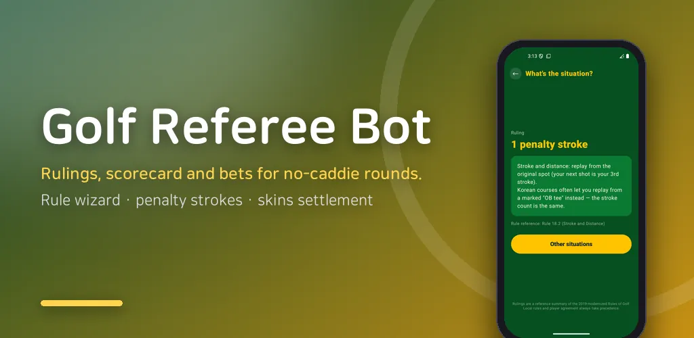
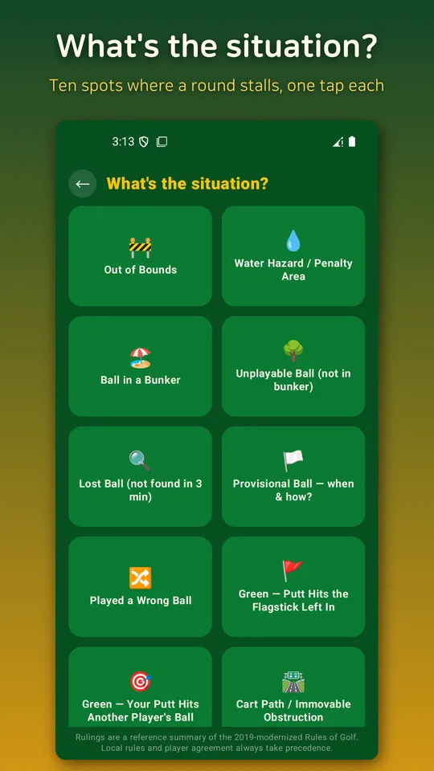
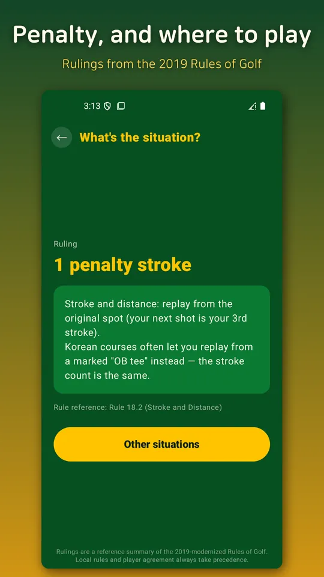
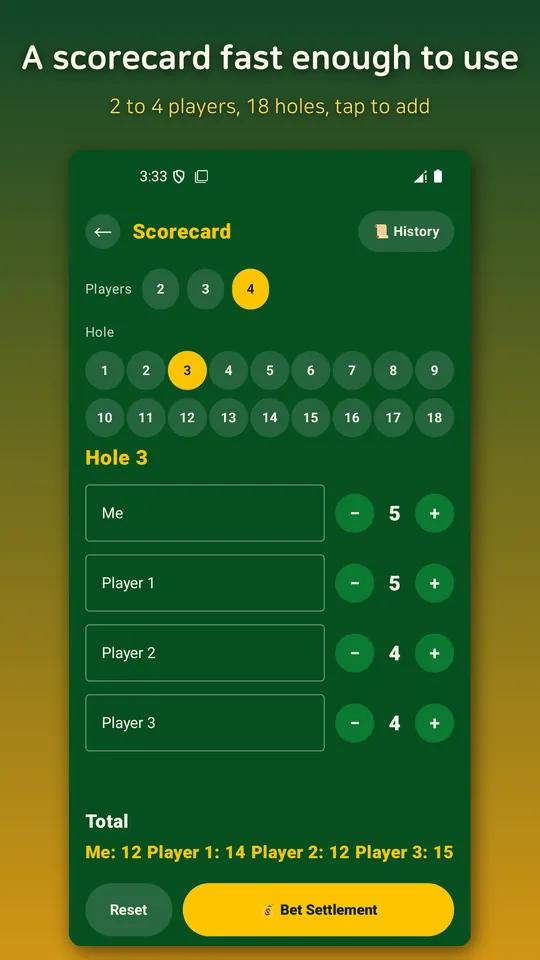
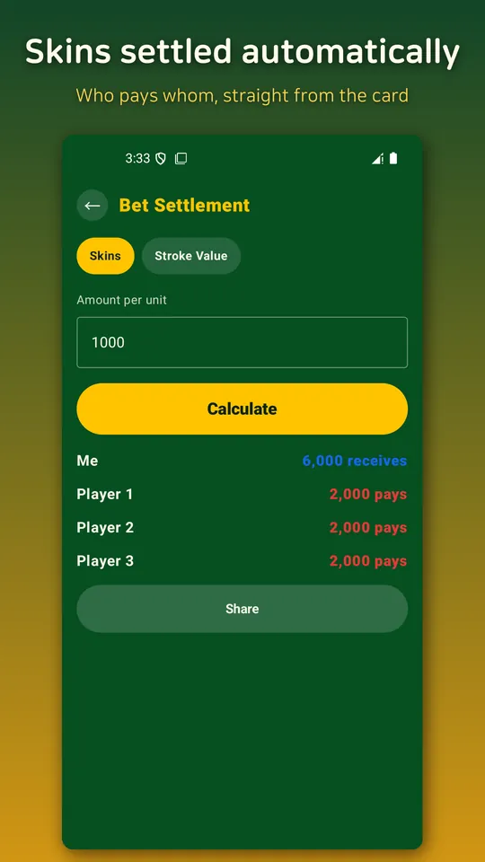

Golf Rules, Scorecard & Bets
Golf penalty and rules wizard, scorecard, and bet settlement in one app.





About this app
Standing in for what a caddie used to handle on a no-caddie round.
More golfers are choosing no-caddie rounds these days, and apps already cover distance, scorekeeping, and betting. The one thing left uncovered is rules. "Is this OB or a hazard?" "How many penalty strokes now?" With no caddie around, there's no one to ask, so groups either guess or end up arguing.
Golf Referee Bot fills that exact gap for no-caddie rounds.
🚧 Rule Wizard
Pick from 10 situations golfers actually get stuck on mid-round — out of bounds, water hazard/penalty area, ball in a bunker, unplayable lie, lost ball, provisional ball, wrong ball, situations on the green, and more — and get the exact penalty plus how to proceed. Based on a summary of the 2019-modernized Rules of Golf.
📝 Scorecard
Quickly log strokes hole-by-hole for 2 to 4 players across 18 holes. Rounds are saved automatically, and finished rounds are archived in your round history.
💰 Bet Settlement
Auto-calculates common formats like skins and stroke-value betting straight from your scorecard. It only calculates — no real money ever moves through the app.
Share the result as a card
After the round, turn your scores and settlement into a shareable image for your group.
- Rulings are a reference summary only — local rules and player agreement always take precedence.
Runs fully offline with no server, so it keeps working out on the course without a hitch.
Recommended for
- Golfers who regularly play no-caddie rounds
- Beginners who get confused calculating penalties for OB or hazards
- Anyone who wants scorekeeping and bet settlement in one app
Android · free with ads · Developer: RealTunaLove · Store listing in 17 languages
Background story: why I built it